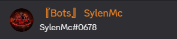
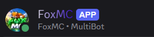
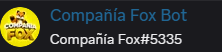
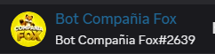

Atención y soporte
Ayuda a jugadores, resolución de dudas y gestión de situaciones dentro de la comunidad.
STAFF DE MINECRAFT · DISCORD DEVELOPER
Staff con 2 años de experiencia y creador de bots de Discord para comunidades de Minecraft.
Staff & Community Management
01 · SOBRE MÍ
Mi nombre es Jasmany, tengo 14 años y cuento con aproximadamente 2 años de experiencia como Staff en servidores de Minecraft. Me considero una persona responsable, comprometida y con muchas ganas de seguir aprendiendo. Me gusta ayudar a los jugadores, resolver problemas y mantener un ambiente seguro, agradable y respetuoso dentro de la comunidad. Durante mi experiencia he desempeñado diferentes cargos, como Helper, Mod, Manager, Head-Manager, Head-Admin, CEO y Owner, participando en la organización y administración de servidores. También he creado 4 bots de Discord para diferentes servidores, desarrollando funciones como sistemas de tickets, comandos personalizados, moderación y herramientas de soporte. Mi objetivo es seguir mejorando mis habilidades, aprender de mis errores y ganarme la confianza de los usuarios y administradores mediante mi trabajo, actitud y compromiso.
Me considero una persona responsable, comprometida y profesional con mi trabajo como Staff. Me gusta ayudar a los jugadores, resolver problemas y mantener un ambiente agradable y seguro dentro de la comunidad. Tengo la capacidad de trabajar en equipo, seguir las normas y actuar con respeto y madurez ante cualquier situación.
Como Staff, busco mejorar constantemente mis habilidades, aprender de mis errores y aportar ideas que ayuden al crecimiento del servidor. Mi objetivo es ganarme la confianza de la comunidad y del equipo administrativo mediante mi trabajo, compromiso y actitud.
02 · EXPERIENCIA STAFF
Ayuda a jugadores, resolución de dudas y gestión de situaciones dentro de la comunidad.
Mantenimiento de un ambiente ordenado, respetuoso y seguro siguiendo las normas del servidor.
Coordinación de equipos, aportación de ideas y apoyo al crecimiento de comunidades.
03 · SERVIDORES
04 · PROYECTOS Y TRABAJOS
Creación y configuración de 4 bots para diferentes servidores de Minecraft.
Herramientas de soporte para organizar solicitudes y mejorar la atención de usuarios.
Funciones de moderación, comandos personalizados y registros de actividad.




05 · MINIJUEGOS
Dos minijuegos sencillos inspirados en la energía de Minecraft. Juega desde tu computadora o celular.
Haz clic en el aura roja antes de que cambie de posición y consigue la mayor cantidad de puntos.
Mueve al gato con las flechas o WASD y persigue al ratón. Cada captura suma un punto.
Consejo: toca la arena en el celular para mover al gato hacia el ratón.
06 · ACTIVIDAD EN VIVO
07 · CONTACTO
Si deseas contactarme para una oportunidad de Staff, colaboración o proyecto de Discord, puedes encontrarme aquí: